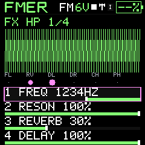
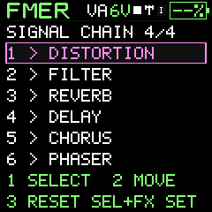
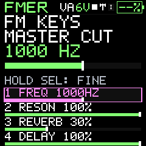
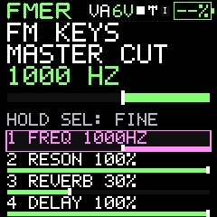
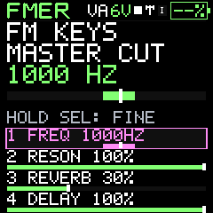

Sound design
Filter, reverb, delay and other effects
Three FX pages control a shared effects chain, with activity feedback.
FX page 1 places cutoff, resonance, reverb return and delay return on K1–K4. ALGORITHM selects low-pass, high-pass or band-pass filtering. Low-pass reduces highs, high-pass reduces lows and band-pass emphasizes a band. Resonance emphasizes the selected region; changes can substantially alter level and timbre.
FX page 2 holds chorus, phaser, distortion and the program LFO on/off gate. FX page 3 exposes delay time, delay feedback, reverb size and reverb model. On FX page 2, turn the Chorus or Phaser amount to focus it, then turn ALGORITHM to choose one of four named modulation recipes. The amount slider controls the contribution. On page 3, ALGORITHM selects FREE MS or a synchronized delay division. See the panel map for exact control roles.
Room and Plate are different reverb structures. Size changes the decay character. Clean and Warm delay offer different feedback coloration. Delay time spans 20–1,000 ms and feedback 0–85. Raising a return adds the effect while preserving the dry instrument rather than replacing it with a quiet wet signal. Chorus thickens, phaser moves spectral notches and distortion adds harmonics.
The LFO gate also works from the LFO menu. It enables the currently stored modulation settings without erasing them. Small activity indicators show effect contributions; they are not precision loudness meters. The oscilloscope shows the combined output.
PERFORM / FX lets each track feed the shared chain or bypass it. It does not allocate a separate reverb and delay to every track. Existing tails may continue after a send is disabled. The final digital output clamp contains out-of-range samples but cannot guarantee safe acoustic volume in an external amplification system.
Delay sync and space characters /722
On FX page3, turn ALGORITHM to select FREE MS0 or note divisions1..7. K1 edits milliseconds in FREE or the division in sync. The saved free time survives mode changes. The footer shows actual delay time; MAX means the one-second buffer cannot fit the requested slow division. Tempo follows internal BPM or received MIDI clock. Reverb choices are Room0, Plate1, Hall2 and Cloud3. Hall is darker and longer; Cloud has a longer, more modulated tail. The filter has a stronger resonant peak, especially in band pass. Reverb return is stronger while the dry path is retained.
In four-track mode ARP and FX show the track number and M (muted, including another track solo), S (solo), and FX1/FX0. Mixer routing stays active when you change pages. Return to SEQ/PERFORM to change those flags; navigation never clears a performance mix.
HOME and FX page1 share the same knob order: cutoff, FX resonance, reverb, delay. HP fills right, LP left, BP around cutoff. FM feedback is in EDIT / CURVE on knob2. Named choices omit internal enum indices; actual musical numbers retain units.
Reorder the signal chain
Press FX to reach SIGNAL CHAIN, the fourth page. K1 or ALGORITHM selects a stage; K2 moves it earlier or later; K3 restores the original order. The complete list reads from input at the top to output at the bottom. The original order is Filter, Reverb, Delay, Distortion, Chorus, Phaser. Existing effect-control pages stay in place. The companion Editor FX tab offers Earlier and Later buttons with Undo.
Order is saved with instruments, projects and FX profiles. Browsing sounds keeps the current FX, including their order; an explicit sound load restores the saved chain. All four tracks use the same chain, with independent FX bypass. The VA voice filter acts before this bus. LFO is modulation, not a seventh serial effect. Moving a stage can change loudness and coloration; tails are retained while routing changes.
Your default signal chain
FX page4 shows the actual six-stage order. K1 or ALGORITHM selects an effect; K2 moves it; K3 resets to your saved default. Hold SEL and press FX to save the current chain as your personal default. This stops playback for a guarded onboard settings write. Wait for Bank A SAVED. It survives power-off and does not rewrite sound banks or projects.
GLO / RESET-CLEAR / ORIGINAL FX ROUTE, then SEL twice, restores and applies Filter → Reverb → Delay → Distortion → Chorus → Phaser as the default. Other resets leave your routing default alone. Explicit sound/project loads retain their own saved chain; the personal default is the reset target and fresh-state boot fallback, not an override of saved music. Ordinary preset browsing continues to preserve live FX. A complete unit backup includes the personal default; a sound/project export does not.
Chorus and phaser character
On FX page 2, turn the Chorus or Phaser knob to select that effect, then turn ALGORITHM through its four characters. Chorus: Dream, Wide, Shimmer, Rush. Phaser: Drift, Sweep, Pulse, Storm. The amount slider remains independent and reaches a 50/50 dry/wet blend at full intensity; retaining the dry sound produces the strongest chorus blend or phaser notches. The chosen character saves with the project. The companion has matching character selectors and includes them in exported FX profiles.
Chorus and phaser recipes
Each effect has four recipes ranging from slower movement to faster or stronger modulation. Their selections are saved with the sound and version 4 FX profile. Depth remains independently adjustable. Recipes do not allocate extra effects or change the six-stage chain.
Chorus recipes: DREAM, WIDE, SHIMMER, RUSH. Phaser recipes: DRIFT, SWEEP, PULSE, STORM. Turn the corresponding amount first, then turn ALGORITHM. Their names describe increasing speed and movement, not additional independent effects.






